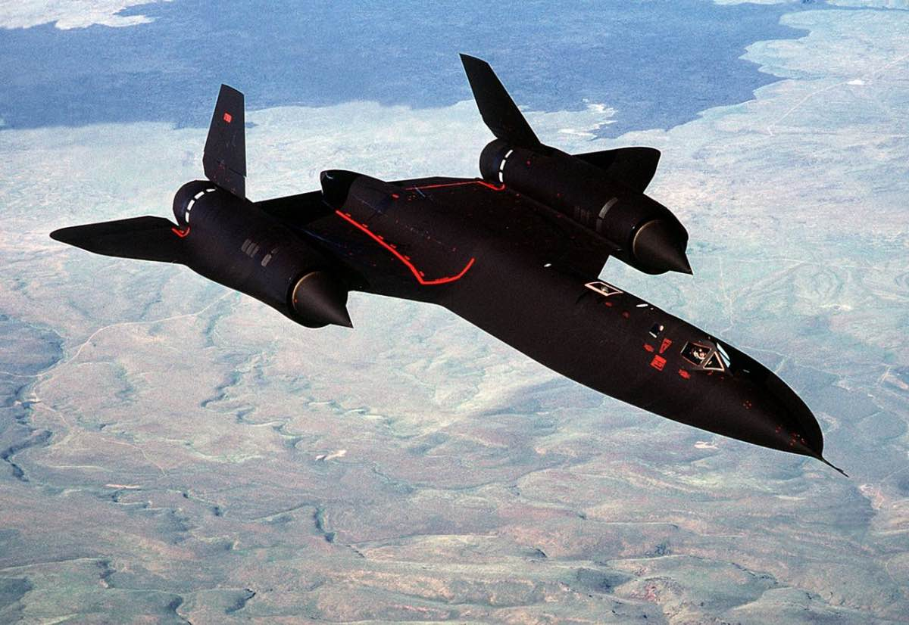
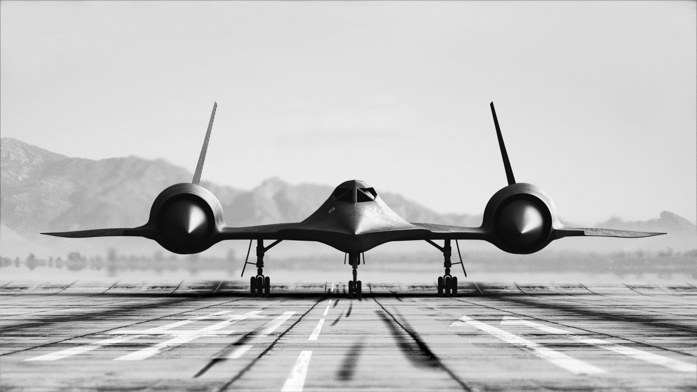
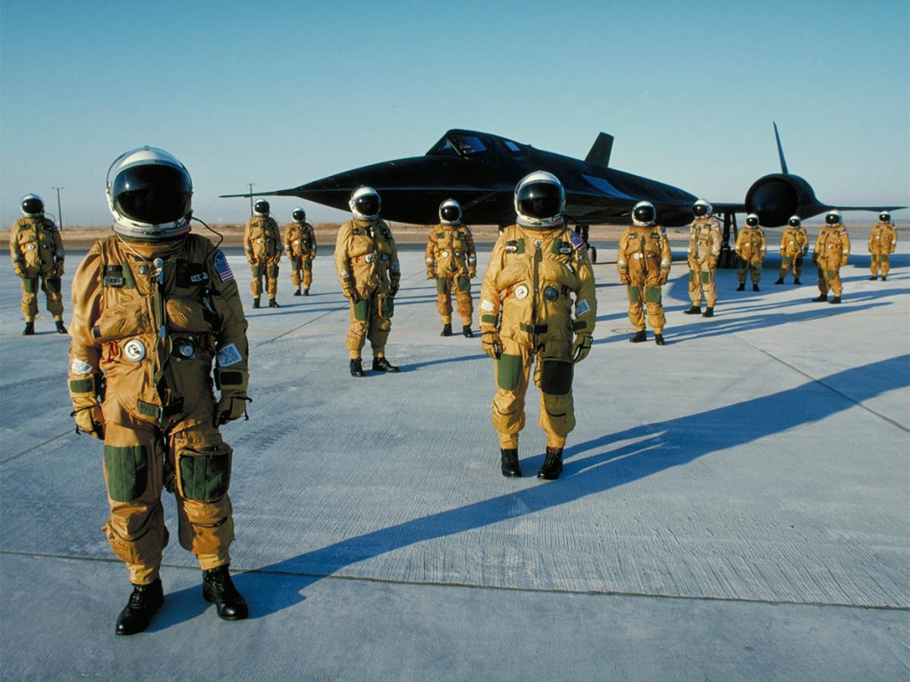
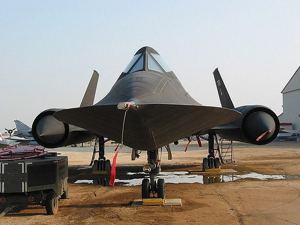
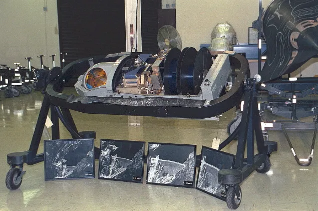

O Lockheed SR-71, é um avião de reconhecimento estratégico operado pela Força Aérea dos Estados Unidos (USAF).
Foi construído pela empresa Lockheed Corporation em sua divisão de Desenvolvimento de Projetos Avançados (também conhecida como Skunk Works), tendo sido projetado pelo engenheiro aeroespacial Clarence L. “Kelly” Johnson.
O SR-71 foi a mais recente variação de um conjunto de aviões que ficaram conhecidos como Blackbirds (A-12, YF-12, M-21 e SR-71).
Diferentemente de seus antecessores, o SR-71 é maior, carregava mais combustível e possuía dois cockpits, o frontal para o piloto e o traseiro para o oficial de sistemas de reconhecimento.
Nenhum dos 31 SR-71 fabricados foi abatido até à atualidade, tendo no entanto 12 unidades sido perdidas em acidentes.
Em 1955, a Agência Central de Inteligência, a Força Aérea dos EUA e a empresa de defesa Lockheed Martin escolheram um local ultra-remoto no deserto de Mojave, no sul de Nevada, cerca de 130 quilômetros a noroeste de Las Vegas, para começar a testar e desenvolver a mais nova e avançada aeronave em o mundo na época.
Por décadas, o Nevada Test and Training Range, mais conhecido como Área 51, não aparecia em nenhum mapa público, e o governo dos EUA nem mesmo admitia que existia. Graças à segurança rígida em torno do local e à natureza experimental da “aeronave preta” testada lá, rumores de objetos voadores não identificados, alienígenas cativos e outras atividades misteriosas circulam pela Área 51 desde os anos 50.
Mach 3.2 é uma velocidade altíssima. Mesmo voando a 85 mil pés, o atrito com ar muito fino ainda gerava calor extremo nas bordas do avião. A alta temperatura foi um dos aspectos que teve influência direta na construção e operação do Blackbird. Em determinados pontos, a superfície poderia poderia passar dos 500 C. As pequenas janelas dos cockpits do Blackbird não eram feitas com vidro comum, mas sim quartzo. Ultrapassando os 300 C em voo supersônico, o vidro simplesmente quebraria.
Para resistir ao calor, a Lockheed construiu o SR-71 empregando titânio em sua construção. No entanto, esse metal não é encontrado com abundância na América do Norte, o que dificultava muito as coisas. Mas existe um certo país que tem extensas reservas e plantas de extração de titânio: a Rússia!
Para conseguir o precioso material, a CIA criou empresas de fachada para adquirir as grandes quantidades de titânio necessárias para a fabricação dos SR-71, que mais tarde seriam usados para espionar a própria União Soviética e seus aliados.
Uma das características mais marcantes do SR-71 era o seu constante vazamento de combustível. Isso ocorria porque quando a aeronave estava parada em solo, as placas de titânio se contraiam, descolando-se umas das outras, o que permitia o vazamento de combustível entre as junções do material. No hangar, o SR-71 sempre estava parado em cima de uma poça de combustível, enquanto sua fuselagem estava sempre manchada
À medida que o jato ia acelerando, o calor gerado pelo atrito aquecia o titânio que se expandia e preenchia as fissuras por onde o combustível corria. A alta temperatura da fuselagem também criou a necessidade para o desenvolvimento de um novo tipo de combustível especial: o JP-7. O JP-7 era um combustível com vários compostos, e só entraba em combustão a temperaturas a partir de 60º C.
Com objetivo de localizar, identificar e fotografar os alvos que lhes fossem designados, como construções militares, quartéis, bases aéreas, etc, o Blackbird era equipado com um enorme conjunto de câmeras, radares e demais sensores, incluindo sistemas de inteligência eletrônica.
Um de seus sensores ópticos de destaque era a Optical Bar Camera (OBC), uma câmera panorâmica de alta potência com uma lente de até 30 polegadas de distância focal. Desenvolvida pela companhia ITEK Corporation, a OBC era capaz de fotografar uma área de 100 mil milhas quadradas por hora. O filme fotográfico usado pela OBC tinha 3200 metros de comprimento, e tudo isso deveria ser analisado por militares especialistas depois que a aeronave retornasse da missão.
